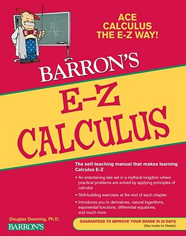

Woodside Calculus
Instructor: Steve Sisney
Meetings: Fall 2012: Mon 1p, Wed 1:45p, Fri 10:30a
Description: First semester single-variable calculus.

Textbook: E-Z CALCULUS (ISBN:9780764144615 $16.99)
The author, Douglas Downing, tells an entertaining story about travels
in the fictional land of Carmorra. In the process he introduces a
series of problems and solves them by applying principles of
calculus. Readers are introduced to derivatives, natural logarithms,
exponential functions, differential equations, and much
more. Skill-building exercises are presented at the end of every
chapter. Douglas Downing earned B.S. and Ph.D. degrees from Yale, and
has taught economics at Seattle Pacific University since 1983.
Course Outline
- Graphs and trigonometric functions
- Slope of the tangent
- Calculating derivatives
- Finding maxima and minima
- Derivatives of complicated functions
- Derivatives of Trigonometric Functions
- Optimum Values and Related Rates
Attachments
See Homework Summary
Further Reading
- In Code (2001) Sarah Flannery
- Men of Mathematics (1986) E.T. Bell
- Schaum's Outline of Calculus (2012) Frank Ayres Jr.
- The Man Who Loved Only Numbers (1999) Paul Hoffman
Selected Articles
Online Resources
Graphing calculators
Lessons
Lesson 1
Wed 17 Oct 2012
- Review graphs of functions from in-class notes and examples.
- Homework 1 Due Fri 19 Oct 2012: attached calculus-hw-01.pdf.
Lesson 2
Fri 19 Oct 2012
- Continue graphs of functions.
Lesson 3
Mon 22 Oct 2012
- Finish graphs of functions (graph transformations).
Begin trigonometric functions.
Lesson 4
Wed 24 Oct 2012
- Finish trigonometric functions.
- Homework 2 Due: Mon 29 Oct 2012:
Complete problems attached: calculus-hw-02.pdf.
Read pages 2-12 of our text.
Complete worksheet on page 13 of our text.
Lesson 5
Mon 29 Oct 2012
- Begin calculus proper: slope of the tangent line
- Homework 5: read Chapter 2 of our text: Calculating derivatives
Lesson 6
Fri 2 Nov 2012
- Discuss Ch. 2: Calculating derivatives
Append derivative rules to study guide.
Proof from Homework 2, problem 6
Discuss mid-term exam Wed 7 Nov 2012
- Homework 6 DUE Mon 5 Nov 2012:
Ch. 2, 1-15, odd numbered problems.
Read Ch. 3 pages 36-46.
Review study guide.
Lesson 7
Mon 5 Nov 2012
- Begin discussion of Ch. 3: Finding maximum and minimum points.
Review for mid-term exam Wed 7 Nov 2012.
- Homework 7 DUE Wed 7 Nov 2012:
Study for mid-term covering material through Ch. 2.
Worksheet from our text on page 46.
Mid-Term Exam
Wed 7 Nov 2012
- Graphs of functions and transformations,
Trigonometric functions,
Slope of the tangent line and limits,
Calculating simple derivatives,
10 questions, 10 points. Partial credit. Scores rounded up.
- Homework DUE Fri 9 Nov:
Read pages 47-58 of our text (the rest of Ch. 3).
Worksheet on page 51.
Lesson 8
Fri 9 Nov 2012
- Go over mid-term questions.
Discuss Finding maximums and minimums
Problems from Worksheets on pages 46 and 51.
- Homework 8 DUE Wed 14 Nov 2012:
Corrected mid-term questions on separate sheet of paper.
Complete Ch. 1 ODD exercises 1-15 starting on page 32 of our
text. (previously assigned).
Complete worksheets on pages 46, 51 of our text. (previously assigned).
Read Ch. 2 pages 51-58: Rules for Curve Drawing
Lesson 9
Wed 14 Nov 2012
- Discuss Rules for drawing curves.
Problems from Worksheet on page 59.
- Homework 9 DUE Fri 17 Nov 2012:
Worksheet page 59
Lesson 10
Fri 16 Nov 2012
- Finish Ch. 3 Finding Maximum and Minimum Points
Begin exercises on p.63
Time permitting, Math history and culture
- Homework 10 DUE Mon 19 Nov 2012:
Exercises on p.63, 1-13 ODD.
Read pages 66-79 in our text: Derivatives of Complicated Functions.
Lesson 11
Mon 19 Nov 2012
- Math history and culture.
Derivatives of complicated functions.
Start Worksheet on page 79.
- Homework 11 DUE Tue 27 Nov 2012:
Worksheet on page 79.
Read ahead to page 84.
- Happy Thanksgiving!
Lesson 12
Wed 28 Nov 2012
- Math history and culture.
Derivatives of complicated functions.
Start Worksheet on page 84 (Quotient Rule).
- Homework 12 DUE Fri 30 Nov 2012:
Finish worksheet on page 84.
Lesson 13
Fri 30 Nov 2012
- Derivatives of complicated functions review: Product Rule, Chain
Rule, Power Rule, Quotient Rule.
Start Exercises on page 85
- Homework 13 DUE Mon 3 Dec 2012:
Exercises page 85; 1-12, 16-20
Read beginning of Chapter 5.
Lesson 14
Mon 3 Dec 2012
- Answer homework questions.
Chapter 5: Derivatives of Trig Functions
Start worksheet on page 99.
- Homework 14 DUE Wed 5 Dec 2012:
Worksheet on page 99.
Lesson 15
Wed 5 Dec 2012
- Answer homework questions
Chapter 5: Derivatives of Trig Functions
- Homework 15 DUE Fri 7 Dec 2012:
Finish any homework not turned in for quarter grade.
Lesson 16
Fri 7 Dec 2012
- Answer homework questions.
Chapter 5: Derivatives of Trig Functions.
Start exercises on page 101.
- Homework 16 DUE Mon 10 Dec 2012:
Exercises 1-6 and 8 on page 101.
Read ahead into Chapter 6.
Lesson 17
Mon 10 Dec 2012
- Answer homework questions.
Chapter 6: Optimum Values and Related Rates.
Start exercises on page 115.
- Homework 17 DUE Wed 12 Dec 2012:
Exercises 1-5 on page 115.
Final Exam
Tue 18 Dec 2012
About
This site can be maintained by anyone on GitHub. Ask your instructor how. ∎